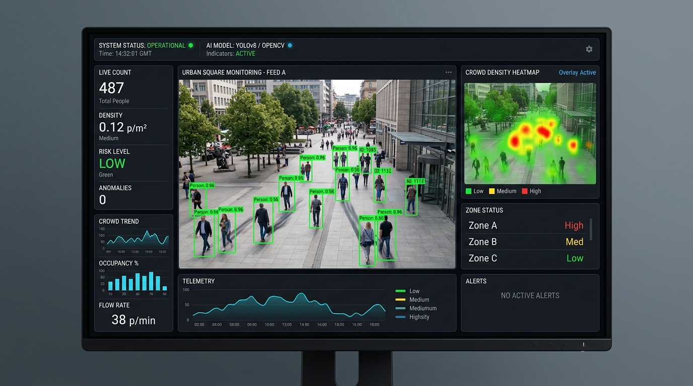

CrowdGuard AI
AI-powered crowd monitoring & real-time risk prediction
An edge-ready surveillance system utilizing fine-tuned YOLOv8 and OpenCV Gaussian Kernel Density matrices to predict bottleneck hazards and stampede risks 4 to 6 minutes ahead of critical congestion.